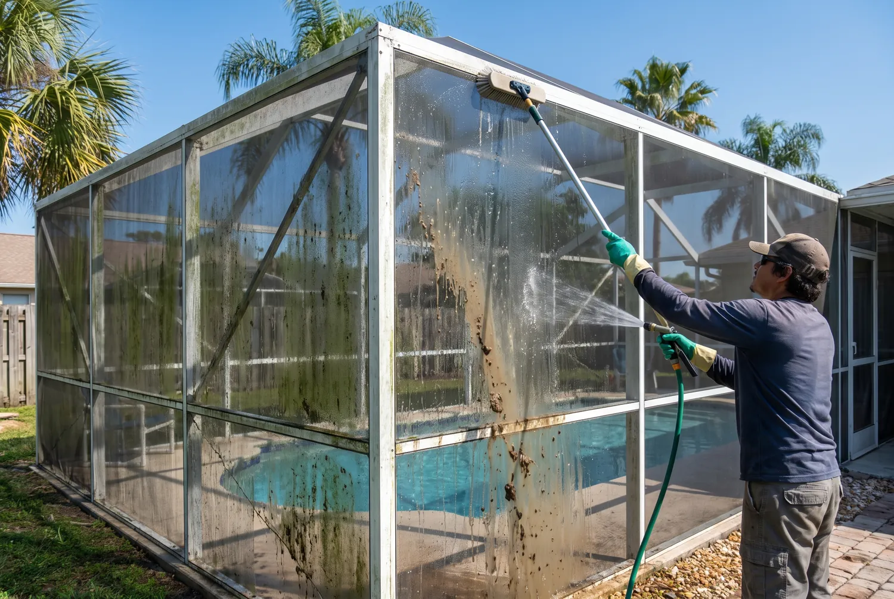

Screen Enclosure & Pool Cage Cleaning in Jacksonville, FL
A pool cage is the largest piece of glass-adjacent surface on most Jacksonville homes, and the one nobody can reach. Mildew, oak pollen and salt film build up on the mesh until the whole enclosure reads grey and the view out of it goes flat. We soft wash the screen, frame and kick plates, clear the gutters built into the cage beam, and re-screen torn panels while we are up there.
Call Now for a Free Estimate
Why Screens Get Filthy Faster Here Than Anywhere Else
Three things load up a Jacksonville screen enclosure, and they arrive on a schedule you can almost set a calendar by.
Pollen is the first. Late winter into spring, live oaks and pines across Duval County put out enough pollen to turn cars yellow, and screen mesh is essentially a filter hanging in the air. It catches that load and holds it, and the first hard rain turns it into a paste that dries into the weave.
Mildew is the second, and it is the one that actually discolors a cage. Jacksonville humidity plus trapped organic debris gives mold something to eat, and it colonizes the shaded north and east faces first. That is why a cage often looks fine from one side of the yard and filthy from the other.
Salt is the third if you are anywhere near the water. Homes in Jacksonville Beach, Atlantic Beach and Ponte Vedra pick up airborne salt that leaves a haze on mesh and works on the fasteners and frame anodizing behind it.

Soft Washing, Not Pressure Washing
If a contractor pulls out a pressure washer near your screens, stop them. Mesh is a thin woven material stretched under tension inside a spline channel. High-pressure water tears it, blows it out of the channel, or leaves a visible bulge where the tension is now uneven. We have replaced a lot of panels that were destroyed by someone trying to do the job faster.
The correct method is chemical rather than mechanical. A low-pressure cleaning solution goes on the mesh and frame, dwells long enough to break down mildew and pollen, then gets rinsed at ordinary garden-hose pressure. The dirt leaves because it has been dissolved, not because it was blasted off.
We tarp or pre-wet landscaping around the base beforehand, because the solution that is good for screen is not good for a bed of impatiens. The pool itself gets covered where the enclosure sits close to the water line, and we check the chemistry afterward.
A typical cage takes two to four hours depending on height and how many panels are involved. Two-story screen walls on the river side of a house take longer, since every panel is reached from a ladder rather than the deck.
Re-Screening Torn Panels
Most cages that need cleaning also need a panel or two replaced, and doing both in one visit saves a second trip charge.
Panels fail in predictable places. The lower ones go first, from dogs, chairs and string trimmers. Corners tear where the spline has shrunk and let the mesh go slack. And after a storm, whole panels can be gone, usually on the windward side.
The repair is straightforward when done properly: pull the old spline out of the channel, cut new mesh oversized, roll fresh spline in with a spline tool, then trim flush. Reusing old spline is the shortcut that causes a repair to pop loose in a year, because rubber that has been compressed and UV-baked for a decade no longer grips.
You also choose the mesh. Standard 18x14 fiberglass keeps mosquitoes out and lets the most air through. No-see-um mesh at 20x20 blocks the tiny biting midges that come off the marsh and the Intracoastal, at the cost of some airflow and faster pollen loading. Pet-resistant mesh is a heavier weave worth considering on the bottom row if you have a dog that leans on screens.

The Cage Gutter Nobody Knows About
Most screen enclosures have a hollow gutter built into the beam that runs along the top edge, and a surprising number of Jacksonville homeowners have never had it cleared.
It fills with oak leaves, pine straw and the grit that washes off the roof. Once it is packed, water sheets over the edge in a curtain during our summer afternoon storms rather than draining to the downspout, which is how you end up with a permanently soggy strip of deck and a mildew line along the base of the screen wall.
It is also a mosquito nursery. Standing water in a blocked cage gutter breeds them within days in Jacksonville heat, which is a particular irony given the entire purpose of a screen enclosure.
We clear it as part of a full cage cleaning rather than as an upsell.
What It Costs in Jacksonville
Screen enclosure cleaning is quoted per cage, based on size, height, and how far the mildew has gotten. Panel re-screening is quoted per panel, with high panels costing more because of the ladder work. A full re-screen of an entire cage is a different project and gets quoted on site.
Two things move a quote more than square footage: how long it has been since the last cleaning, since heavy mildew needs a second application, and how much of the enclosure can be reached from the deck rather than from a ladder.
Call (904) 944-7358 for a Free Quote
Frequently Asked Questions
How often should a pool cage be cleaned in Jacksonville?
Once a year for most homes, twice if the cage sits under live oaks or within a few miles of the ocean. Oak pollen in late winter and salt-laden air on the beaches both accelerate the grime, and mildew gets a foothold quickly in our humidity once organic debris settles into the mesh.
Can you clean a screen enclosure without damaging the mesh?
Yes, and pressure is exactly the wrong tool. Screen mesh tears under a pressure washer. We soft wash instead, applying a low-pressure cleaning solution that lifts mildew and pollen chemically, dwelling briefly, then rinsing at garden-hose pressure.
Do you repair torn screens or only clean them?
We do both. Individual panels are re-screened by pulling the old spline, fitting new mesh and rolling fresh spline into the frame channel. Panel replacement is quoted per panel depending on size and height, and it is common to clean the whole cage and re-screen two or three panels in the same visit.
What is the difference between standard mesh and no-see-um screen?
Standard 18x14 mesh stops mosquitoes and lets more breeze through. No-see-um mesh is a tighter 20x20 weave that blocks the tiny biting midges common near marsh and the Intracoastal. The tighter weave cuts airflow slightly and traps more pollen, so it needs cleaning more often.
Booking more than one service? Most customers pair this with residential window cleaning or gutter cleaning on the same visit.